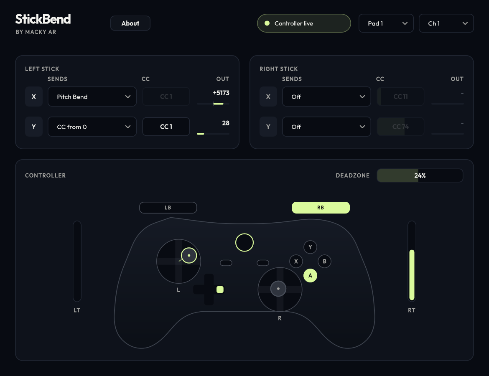

| Section 1 | What StickBend does: the idea, and where it sits in your signal chain |
| Section 2 | Install: requirements, controllers that work, copying the files |
| Section 3 | Quick start in REAPER: from zero to bending in five steps |
| Section 4 | The interface: every control on screen, explained |
| Section 5 | Parameters: the full list with ranges and defaults, send modes, useful CC numbers, deadzone |
| Section 6 | Stick outputs: linking the sticks to any knob in your DAW |
| Section 7 | Recording and editing: keeping every bend editable after you record |
| Section 8 | Other DAWs: Bitwig, FL Studio, Ableton Live, Cubase, Studio One |
| Section 9 | Troubleshooting: symptoms and fixes |
| Last pages | Privacy, licence and about the creator |
Setups marked Tested were checked by hand with this version. Setups marked Expected follow each DAW's standard routing for plugins that output MIDI but have not been tested yet. Menu names can differ between DAW versions.
Your keyboard notes pass straight through untouched. StickBend only adds new messages when you move a stick, so you play with one hand on the keys and bend, swell or wobble with your thumb.
Everything it sends is ordinary MIDI. Your synth sees it exactly as if you had moved a pitch wheel or mod wheel, and your DAW records it the same way, so it stays editable afterwards.

| Computer | Windows 10 or 11, 64-bit |
| DAW | Any host that loads VST3 or CLAP plugins and accepts MIDI from plugins: REAPER, Bitwig Studio, FL Studio, Cubase, Studio One, Ableton Live and others |
| Controller | An Xbox-compatible (XInput) controller, wired, wireless adapter or Bluetooth |
| Keyboard | Any MIDI keyboard. StickBend also works with no keyboard at all, for drawing in bends over existing MIDI. |
Which format? Use CLAP if your DAW supports it (REAPER, Bitwig). It carries MIDI natively. Use VST3 everywhere else.
REAPER records what comes out of the Input FX. With StickBend there, every stick move is recorded into your MIDI item as real pitch bend and CC data that you can edit later.
If you put StickBend in the normal FX chain instead, you still hear the bends live, but REAPER records only your keyboard, so the bends vanish from the recording.
| Axis | Sends | Effect |
|---|---|---|
| Left stick X | Pitch Bend | Left bends down, right bends up |
| Left stick Y | CC 1, from 0 | Mod wheel. Up or down raises it, centre returns to 0 |
| Right stick X | Off (CC 11 ready) | Turn on for expression |
| Right stick Y | Off (CC 74 ready) | Turn on for brightness or filter cutoff |
| Status pill | Controller live (lime dot) when the selected pad is connected. No controller when it is not. StickBend checks again about once a second, so you can plug in a pad at any time. |
| Pad | Which controller slot (1 to 4) to read. Slot 1 is the first pad Windows connected. |
| Ch | The MIDI channel (1 to 16) for the bend and CC messages. Match it to the channel your synth listens on. Most synths listen on all channels, so 1 is usually fine. |
| About | Version, credits, links and the privacy summary. |
One card per stick, one row per axis. Each row has three parts:
| Sends | What this axis sends: Off, Pitch Bend, CC centred or CC from 0. Explained in section 5.2. |
| CC | The CC number, 0 to 127. Only active when Sends is one of the CC modes, otherwise it is dimmed. |
| Out | The value being sent right now, with a small meter. Pitch bend shows -8192 to +8191 (0 is centre). CC shows 0 to 127. |
These are the names you see in your DAW's automation and parameter lists.
| Parameter | Range | Default | What it does |
|---|---|---|---|
| Controller | 1 to 4 | 1 | Controller slot to read |
| MIDI Channel | 1 to 16 | 1 | Channel for outgoing bend and CC |
| Deadzone | 0 to 50% | 24% | How far a stick must move before it sends anything |
| Left X / Left Y / Right X / Right Y sends | Off, Pitch Bend, CC centred, CC from 0 | Bend, CC from 0, Off, Off | What each axis sends |
| Left X / Left Y / Right X / Right Y CC # | 0 to 127 | 1, 1, 11, 74 | CC number when the axis is in a CC mode |
| Stick Left X / Left Y / Right X / Right Y | 0 to 1 | 0.5 | Follow the sticks while you play. When the stick rests, automation on these plays back as bends and CCs (sections 6 and 7). |
| Off | The axis sends nothing. |
| Pitch Bend | Full 14-bit pitch bend, the same message a pitch wheel sends. Centre is no bend. How far the note bends (2 semitones, 12, and so on) is set in your synth, not in StickBend. |
| CC centred | Rests at 64. One direction goes down to 0, the other up to 127. Good for things that have a middle: pan (CC 10), or sweeping a filter both ways. |
| CC from 0 | Rests at 0. Pushing either way raises it to 127, so the stick works like a spring-loaded mod wheel. Good for vibrato depth (CC 1). |
| CC 1 · Mod wheel | Vibrato or the synth's main modulation. The classic choice. |
| CC 2 · Breath | Expression in many wind and string libraries |
| CC 7 · Volume | Channel volume |
| CC 10 · Pan | Use with CC centred |
| CC 11 · Expression | Swells and dynamics in orchestral libraries |
| CC 71 · Resonance | Filter resonance on many synths |
| CC 74 · Brightness | Filter cutoff on many synths |
Real sticks never rest exactly at the centre. The deadzone ignores small movements near the middle, then rescales the rest so a full push still reaches the full value. Each axis has its own deadzone, which is why it is drawn as a cross.
StickBend exposes Stick Left X, Stick Left Y, Stick Right X and Stick Right Y as plugin parameters. Each rests at 0.5 when the stick is centred and moves from 0 to 1 across its full travel. They move whatever the Sends setting is, even if the axis is Off.
They also work the other way. While a stick is at rest, StickBend plays whatever its Stick parameter says, so recorded or hand-drawn Stick envelopes turn into real pitch bend and CC on playback. Move the stick and it takes over again.
| As MIDI data | As automation | |
|---|---|---|
| What is recorded | Pitch bend and CC messages inside the MIDI item | Envelopes for the Stick parameters, which StickBend plays back as bends and CCs |
| Where you edit it | The MIDI editor's CC lanes (Pitch, CC 1 and so on) | The track's automation lanes |
| Best for | Bends and vibrato that belong to the performance | Reshaping a performance as smooth curves, and driving other plugins' knobs |
| How in REAPER Tested | StickBend in Input FX, arm, record | StickBend in the normal FX chain, automation mode Latch or Write, arm the Stick envelopes, play. Switch back to Read to hear it. To record with the StickBend window closed, see section 9. |
StickBend only sends a message when a stick moves. A centred stick is completely silent, so on playback your recorded and edited bends play exactly as written.
The idea is the same everywhere: StickBend's MIDI output must reach your synth. These are the standard routings for each DAW. They are marked Expected because they have not been tested with this version yet.
Load the CLAP version. On an instrument track, drop StickBend into the device chain before your instrument. Notes and bends flow straight into it. Record as normal and edit bends in the clip's expression lanes.
Load StickBend (VST3) as an instrument on its own track that receives your keyboard. Then set the input of your synth track to StickBend's MIDI output. Look for "plugin MIDI output" in your DAW's manual if the menus differ.
| Symptom | Fix |
|---|---|
| Status says No controller | Check the pad is on and connected. Try the other slots in the Pad menu. PlayStation pads need DS4Windows running. |
| Visualizer moves but nothing bends | StickBend must be before the synth. In REAPER use Input FX with the track armed and monitoring on. Check the synth's pitch bend range is not 0. |
| Live bends work but disappear from the recording | In REAPER, StickBend is in the normal FX chain, so only your keys are recorded into the item. Move it to Input FX, or record the Stick envelopes instead (section 7.1). |
| Envelope does not record | Set the track to Latch or Write and arm the Stick envelope. Use version 0.1.0 or later. |
| Envelope only records while the StickBend window is open | REAPER ignores parameter changes from plugins with closed windows by default. In Preferences → Plug-ins → VST, under VST compatibility, set Parameter automation notifications to process all notifications. Or keep the window open, or record as MIDI through Input FX instead. |
| Envelope recorded but playback has no bend | Check the axis's Sends is still Pitch Bend or CC, the envelope isn't bypassed, and the track is in Read or Latch mode rather than Trim/Read. Leave the stick untouched during playback. |
| Notes slightly out of tune at rest | Raise the Deadzone. Your stick rests a little off centre. |
| Synth ignores the bends | Match the Ch setting to the channel your synth listens on. |
| Volume drops to silence | An axis is sending CC 7 or CC 11 in CC from 0 mode. Change the CC number or use CC centred. |
| Cannot replace the plugin file | Close the DAW first. Windows locks plugins that are in use. |
| VST3 version misbehaves in your DAW | Try the CLAP version if your DAW supports it. |
Still stuck? Email macky.business725@gmail.com with your DAW name and version, your controller model, and what the status pill says.
No accounts, no analytics, no telemetry, no licence checks. Controller readings are turned into MIDI on the spot and never stored or sent anywhere. Your settings are saved by your DAW inside your project. The only time anything goes online is when you click a link in the About panel, which opens your own browser. The full policy is in PRIVACY.md.
StickBend is free and open source under the GNU Affero General Public License v3. You can use it in any project, commercial or not, at no cost. Copyright (C) 2026 Mahesh Arora (Macky Ar). It comes with no warranty.
Built with JUCE (AGPL-3.0), the VST3 SDK, CLAP and clap-juce-extensions (all MIT) and the Outfit typeface (SIL Open Font License). Full notices are in THIRD_PARTY_NOTICES.md. VST is a registered trademark of Steinberg Media Technologies GmbH.
StickBend was built by musician Macky Ar (Mahesh Arora), a multi-instrumentalist who wanted pitch bend to feel as natural as moving a thumb.
Pitch wheels are small, stiff and stuck at the far left of the keyboard. A game controller is cheap, familiar and comfortable to hold, and almost everyone already knows how to use one. StickBend turns it into an accessible expression tool, so bends, swells and vibrato are within reach of anyone, on any keyboard, including players who find a pitch wheel awkward to reach or grip.